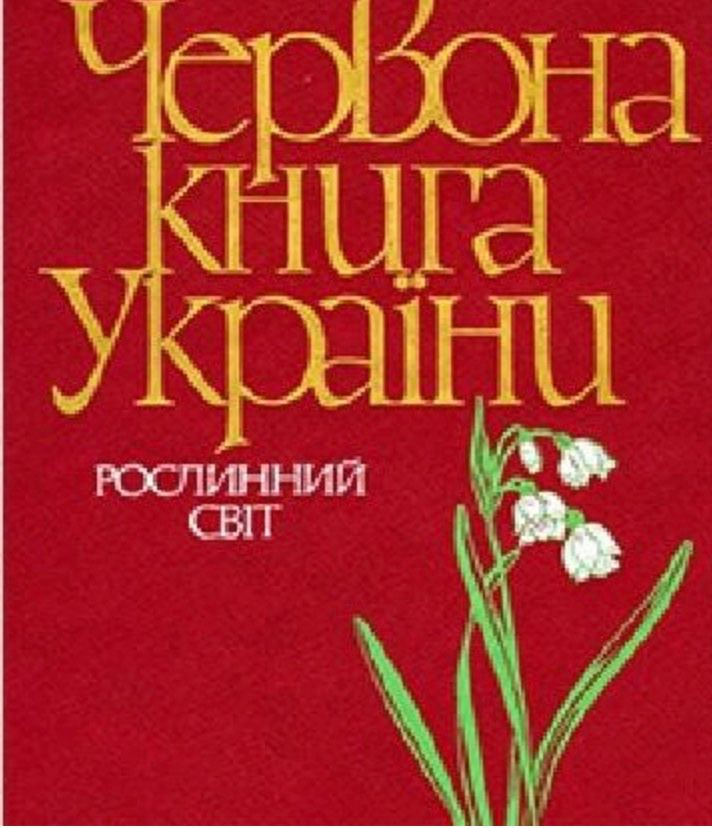

ЧЕРВОНА КНИГА УКРАЇНИ

— офіційний державний документ, який містить перелік рідкісних, вразливих і зникаючих видів тваринного і рослинного світу у межах України, а також узагальнені відомості про сучасний стан цих видів і заходи щодо їх збереження.
Те, що рідкісні рослини занесені до Червоної книги, лише сигнал небезпеки , яка загрожує рослинам. Ми всі повинні пам'ятати , що це ми своїми вчинками завдаємо їм шкоди.